클릭 또는 ESC로 닫기
앱에 접속하면 팀별로 구분된 사용자 목록이 표시됩니다.
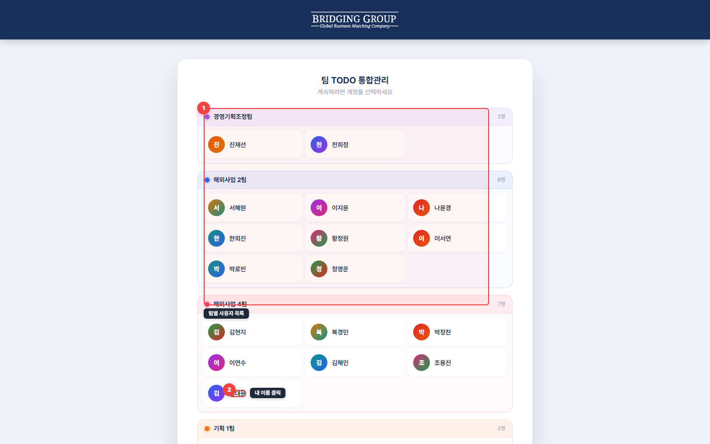
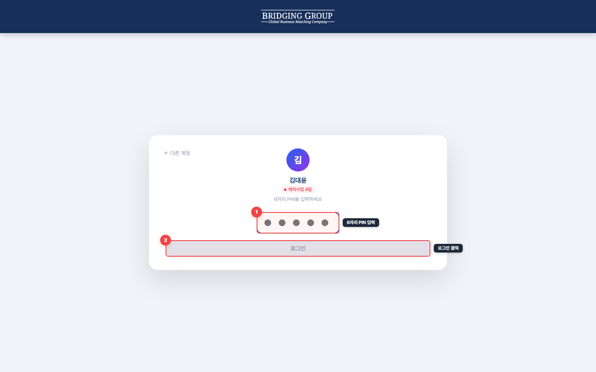
로그인 후 기본 화면은 리스트 뷰입니다.
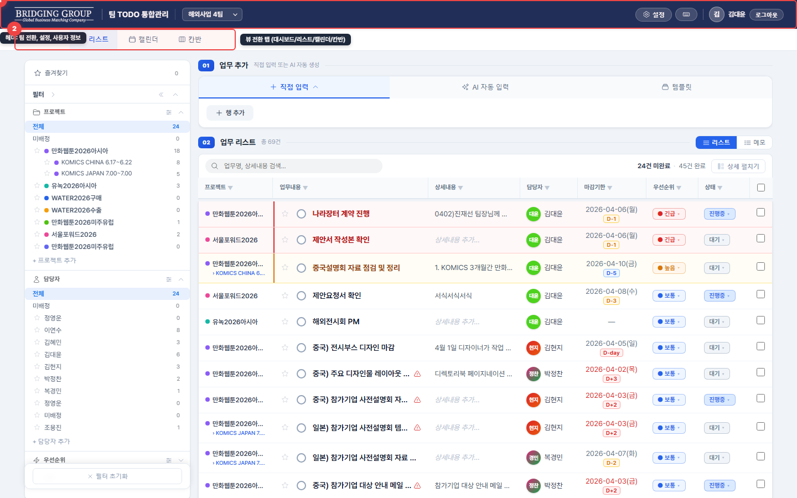
| 영역 | 설명 |
|---|---|
| 상단 헤더 (남색) | 로고, 팀 전환, 설정, 단축키, 사용자 정보 |
| 탭 바 | 대시보드 / 리스트 / 캘린더 / 칸반 — 뷰 전환 |
| 왼쪽 사이드바 | 검색, 프로젝트·담당자·우선순위·상태 필터 |
| 업무 추가 섹션 | 직접 입력, AI 자동 입력, 템플릿 탭 |
| 업무 테이블 | 프로젝트, 업무명, 상세, 담당자, 마감기한, 우선순위, 상태 |
업무를 추가하는 3가지 방법이 있습니다. 리스트 뷰 상단의 "업무 추가" 영역에서 탭을 전환하여 사용합니다.
"+ 직접 입력" 탭을 선택하면 테이블 형태의 입력 행이 나타납니다.
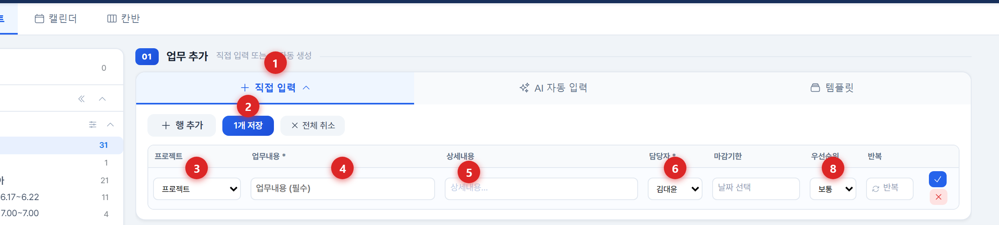
"AI 자동 입력" 탭에서 텍스트나 파일을 분석하여 업무를 자동 생성합니다.
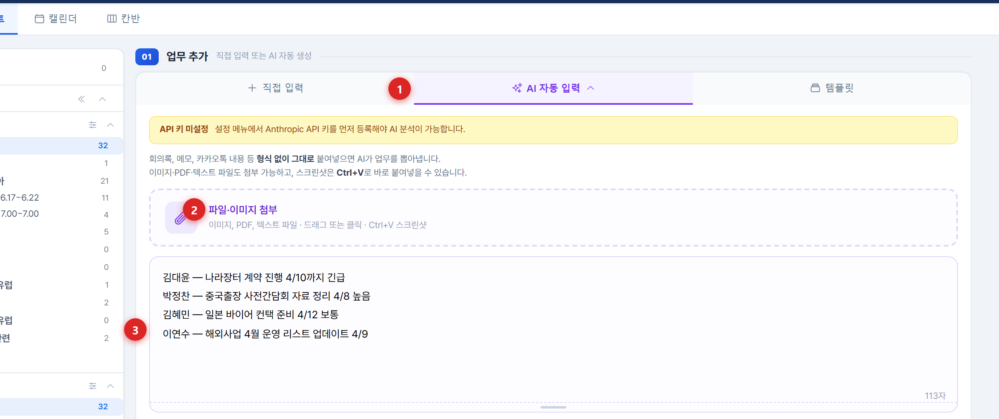
AI 분석이 완료되면 아래에 결과 미리보기가 나타납니다.
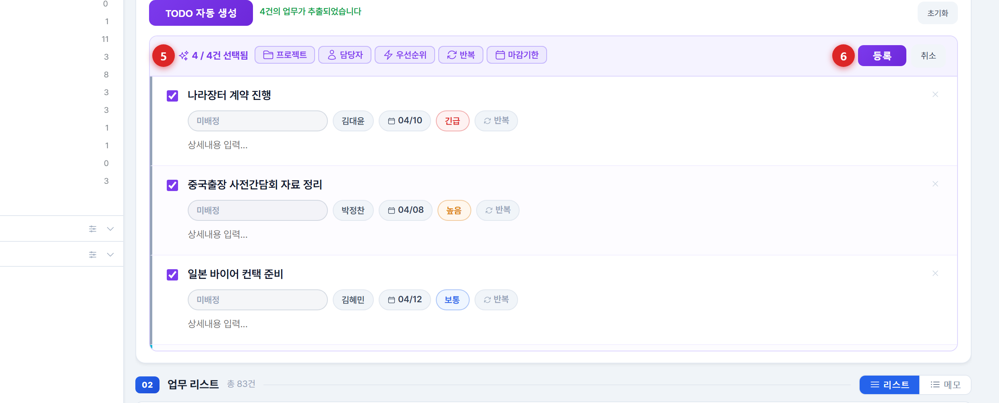
"템플릿" 탭에서 미리 저장된 업무 세트를 한 번에 등록합니다.
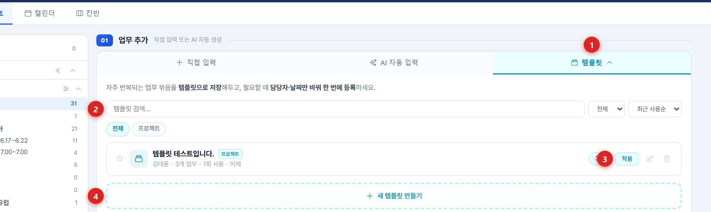
업무를 수정, 완료, 삭제하는 방법입니다.
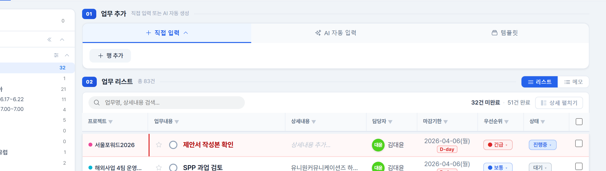
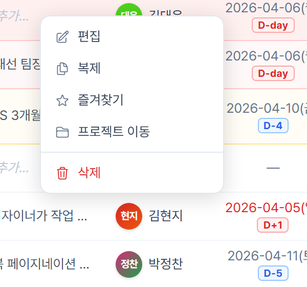
업무 행을 마우스 우클릭하면 빠른 액션 메뉴가 나타납니다:
| 메뉴 | 설명 |
|---|---|
| 편집 | 수정 모달 열기 |
| 복제 | 동일한 업무를 [복사]로 새로 생성 |
| 즐겨찾기 | 즐겨찾기 토글 |
| 프로젝트 이동 | 다른 프로젝트로 이동 |
| 삭제 | 업무 삭제 (확인 후) |
상단 탭 바에서 5가지 뷰를 전환할 수 있습니다. 리스트 뷰 내에서 리스트/메모 탭을 전환할 수 있습니다.
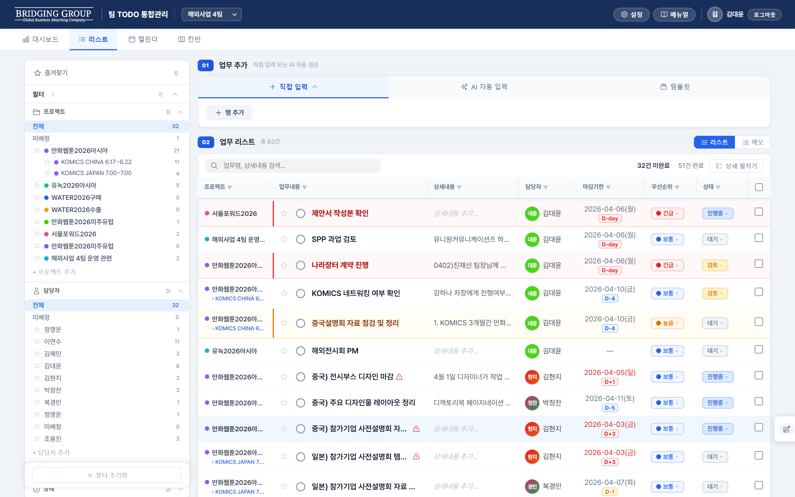
테이블 형태로 모든 업무를 한눈에 봅니다. 열 정렬, 인라인 편집, 다중 선택이 가능합니다.
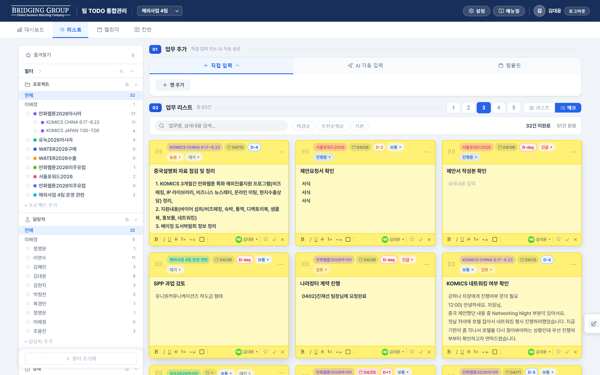
리스트 뷰 상단의 "메모" 탭을 클릭하면 전환됩니다. 업무가 포스트잇(스티키노트) 형태의 카드로 표시됩니다.
| 기능 | 방법 |
|---|---|
| 카드 색상 변경 | 카드 우측 상단 ··· 버튼 → 색상 팔레트 선택 (노랑, 핑크, 라벤더, 파랑, 회색) |
| 업무명 편집 | 카드 제목을 클릭하여 직접 수정 |
| 상세내용 편집 | 카드 본문 영역을 클릭 → 리치텍스트 편집 (B/I/U, 목록, 색상) |
| 프로젝트·상태 변경 | 카드 하단의 드롭다운 클릭 |
| 완료 처리 | 카드 하단 체크 버튼 클릭 → 카드가 반투명으로 변경 |
| 카드 추가 | 우측의 "+ 추가하기" 카드 클릭 |
| 열 수 변경 | 숫자 키 1~5 또는 상단 열 수 버튼 |
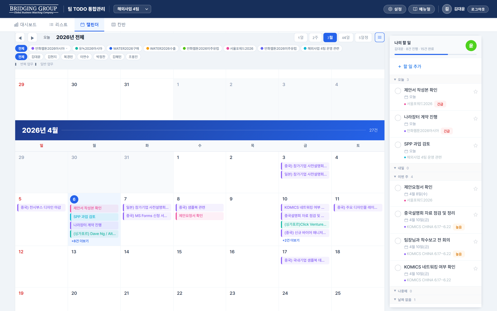
월간 캘린더에 마감기한 기준으로 업무가 표시됩니다. 우측에 "나의 할 일" 사이드바가 있습니다.
| 기능 | 방법 |
|---|---|
| 날짜 클릭 | 해당 날짜에 빠른 업무 추가 |
| 이벤트 클릭 | 업무 상세 팝오버 |
| 드래그 | 나의 할 일에서 섹션(오늘/내일/이번주) 간 이동 → 날짜 자동 변경 |
| 뷰 전환 | 일/주/월/N일/일정 5가지 서브 뷰 |
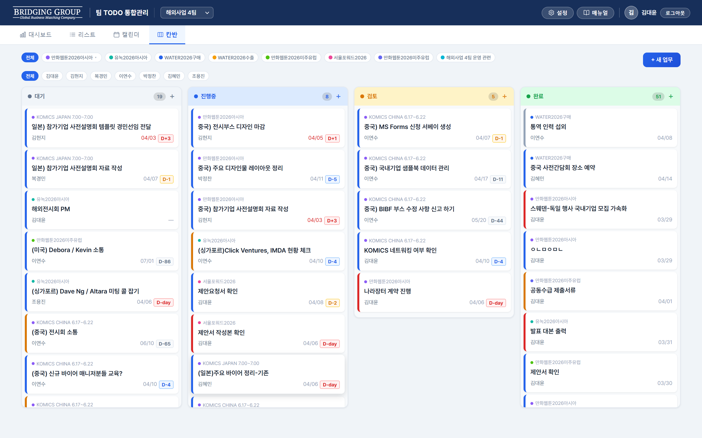
대기/진행중/검토/완료 4개 컬럼으로 업무 상태를 시각화합니다. 카드를 드래그앤드롭으로 다른 컬럼에 놓으면 상태가 자동 변경됩니다.
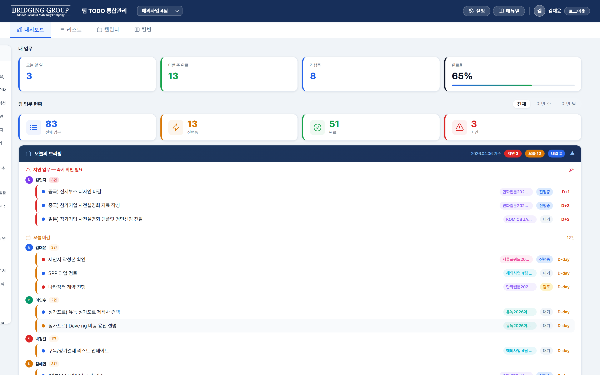
팀 전체 업무 현황을 한눈에 봅니다. 상단에 내 업무 현황 카드, 오늘의 브리핑, KPI 카드, 데일리 활동/멤버별/프로젝트별 통계가 표시됩니다.
사이드바에서 원하는 업무만 골라볼 수 있습니다.
사이드바 상단 또는 리스트 뷰 검색창에 키워드를 입력하면 업무명 + 상세내용에서 실시간 검색됩니다.
세부 프로젝트가 있는 상위 프로젝트를 클릭하면 하위 전체가 함께 선택됩니다. 세부 프로젝트를 개별 클릭하면 해당 세부만 필터링됩니다.
전체보기 모드에서 팀이 2개 이상이면, 프로젝트와 담당자가 팀별 그룹 헤더로 구분되어 표시됩니다. 그룹 헤더를 클릭하면 접기/펼치기가 가능합니다.
프로젝트는 2단계 계층 구조를 지원합니다. 설정 > 프로젝트 탭에서 관리합니다.
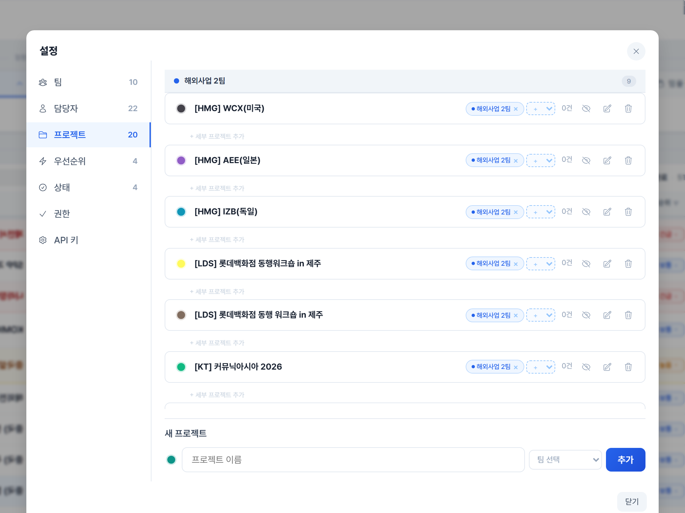
프로젝트 탭"/>| 레벨 | 예시 | 설명 |
|---|---|---|
| 상위 프로젝트 | 만화웹툰2026아시아 | 큰 프로젝트 단위 |
| 세부 프로젝트 | └ 중국, └ 일본, └ 태국 | 국가별/단계별 하위 분류 |
설정 하단의 "새 프로젝트" 영역에서 이름, 색상, 소속 팀을 선택하고 "추가" 버튼을 클릭합니다.
설정 > 팀 탭에서 팀을 생성하고 멤버를 배정합니다.
헤더의 팀 드롭다운에서 보고 싶은 팀을 선택하면, 해당 팀의 프로젝트와 멤버만 표시됩니다. "전체보기"를 선택하면 모든 팀을 볼 수 있습니다.
역할별로 사용할 수 있는 기능이 다릅니다. 설정 > 권한 탭에서 관리자가 세부 권한을 커스텀할 수 있습니다.
| 기능 | 관리자 | 편집자 | 뷰어 |
|---|---|---|---|
| 업무 생성 | ✅ | ✅ | ✅ |
| 본인 업무 수정 | ✅ | ✅ | ✅ |
| 타인 업무 수정 | ✅ | ✅ | ❌ |
| 본인 업무 삭제 | ✅ | ✅ | ✅ |
| 타인 업무 삭제 | ✅ | ❌ | ❌ |
| 타 팀 조회 | ✅ | ❌ | ❌ |
| 프로젝트 관리 | ✅ | ✅ | ❌ |
| 멤버 관리 | ✅ | ✅ | ❌ |
| 설정 변경 | ✅ | ❌ | ❌ |
| AI 자동입력 | ✅ | ✅ | ✅ |
키보드 단축키로 빠르게 작업할 수 있습니다. ? 키를 누르면 도움말이 열립니다.
| 단축키 | 기능 |
|---|---|
| Ctrl+Z | 실행 취소 (Undo) |
| Ctrl+Y | 다시 실행 (Redo) |
| Delete | 선택된 업무 삭제 |
| ? | 단축키 도움말 열기 |
| 단축키 | 기능 |
|---|---|
| T | 오늘로 이동 |
| ← → | 이전/다음 기간 이동 |
| D | 일간 뷰 |
| W | 주간 뷰 |
| M | 월간 뷰 |
| A | 일정 뷰 |
| 단축키 | 기능 |
|---|---|
| 1~5 | 열 수 변경 (1열~5열) |
A: Ctrl+Z로 되돌리거나, 헤더의 휴지통 아이콘에서 복원할 수 있습니다.
A: 뷰어 역할은 본인 업무만 수정 가능합니다. 타인 업무 수정이 필요하면 팀 관리자에게 편집자 이상 역할을 요청하세요. (설정 > 권한 탭에서 역할별 권한 확인 가능)
A: 설정 > 프로젝트에서 완료된 프로젝트의 눈 아이콘을 클릭하여 숨길 수 있습니다. 모든 뷰에서 사라집니다.
A: 설정 > API 키 탭에서 Anthropic API 키가 올바르게 입력되었는지 확인하세요. 키가 맞는데도 안 되면 API 사용량 한도를 확인해보세요.
A: 네. 모바일 브라우저에서 접속하면 자동으로 모바일 레이아웃이 적용됩니다. 하단 탭 바와 카드형 리스트가 제공됩니다.
A: Google Firebase Firestore에 실시간으로 저장됩니다. 여러 기기에서 동시에 접속해도 데이터가 자동 동기화됩니다.
A: 업무 수정 모달에서 반복 드롭다운을 클릭하여 매일/매주/매월 중 선택합니다. 직접 입력 행에서도 반복 컬럼에서 설정 가능합니다.
A: 팀 관리자에게 문의하세요. 관리자는 설정 > 담당자 탭에서 해당 멤버의 PIN을 확인하거나 변경할 수 있습니다.
A: 리스트 뷰에서 해당 업무의 프로젝트 셀을 클릭하여 드롭다운에서 변경하거나, 우클릭 메뉴 > "프로젝트 이동"을 사용하세요.
A: 리스트 뷰에서 업무 왼쪽의 체크박스를 여러 개 선택하면 상단에 일괄 작업 바가 나타납니다. 거기서 삭제, 상태 변경, 담당자 변경 등을 한 번에 할 수 있습니다. Shift+클릭으로 범위 선택도 가능합니다.
A: 수정 모달에서 Ctrl+Enter를 누르면 바로 저장됩니다.
A: 캘린더 뷰의 우측 "나의 할 일" 사이드바에서 업무를 드래그하여 오늘/내일/이번 주 섹션으로 이동하면 마감일이 자동 변경됩니다.
A: 리스트 뷰 하단의 "완료됨" 섹션은 기본적으로 접혀 있습니다. 클릭하면 펼쳐서 볼 수 있고, 평소에는 접혀있어 작업 중인 업무에 집중할 수 있습니다.
A: 네. 원하는 필터를 설정한 후 리스트 뷰 상단의 "저장" 버튼을 클릭하면 이름을 지정하여 저장됩니다. 저장된 필터는 언제든 한 클릭으로 불러올 수 있습니다.
A: 관리자 역할만 가능합니다. 헤더의 팀 드롭다운에서 다른 팀을 선택하거나 "전체 보기"를 선택하세요. 편집자와 뷰어는 본인 소속 팀만 볼 수 있습니다.
A: 네. 업무 수정 모달 하단의 "첨부" 영역에서 "+ 파일/링크 추가"를 클릭하면 파일명과 URL을 입력할 수 있습니다.
A: 정상적으로는 Firebase에 자동 저장됩니다. 데이터가 사라진다면 네트워크 연결 상태를 확인하세요. 오프라인 상태에서 입력한 데이터는 연결 복구 시 동기화됩니다.